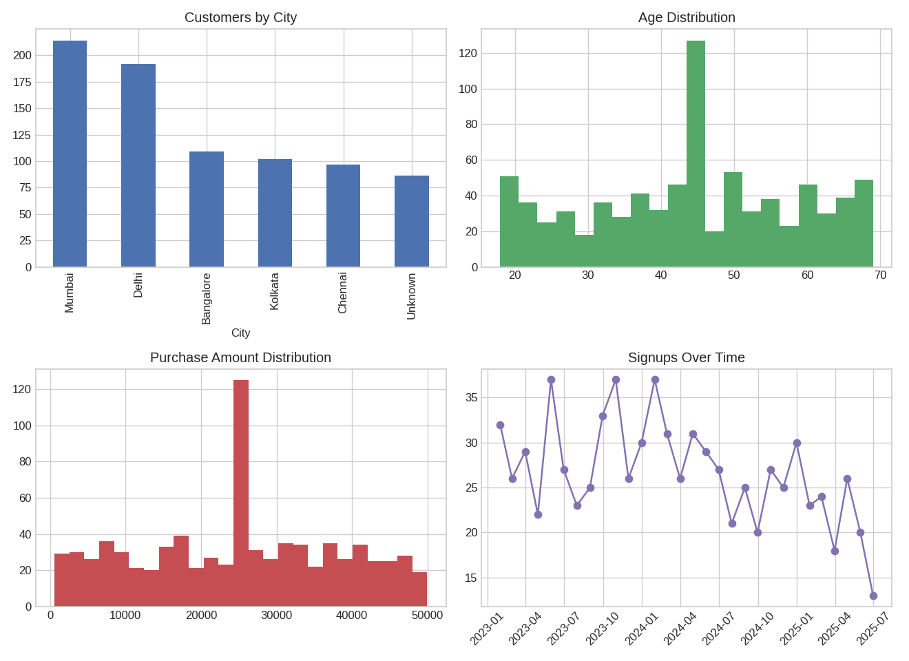

Generated automatically on 31 Jul 2026, 20:54
Loaded raw data: 840 rows, 7 columns Removed 40 duplicate rows Standardized City field casing and whitespace Fixed 80 invalid/missing Age values (imputed with median=44) Imputed 52 missing Income values with median=82076 Fixed 97 invalid/missing PurchaseAmount values (imputed with median=25287) Filled 86 missing City values with 'Unknown' Parsed SignupDate to datetime Final cleaned dataset: 800 rows (from 840 raw rows)
| City | Customers |
|---|---|
| Mumbai | 214 |
| Delhi | 192 |
| Bangalore | 109 |
| Kolkata | 102 |
| Chennai | 97 |
